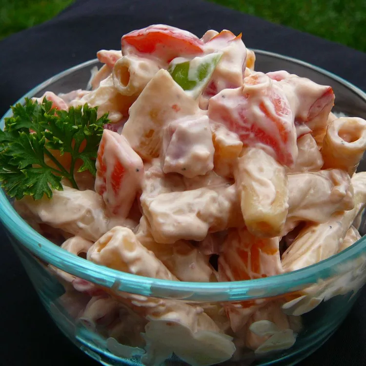

Awesome Ham Pasta Salad

Description
A perfectly rich, old-school trat made with cubed ham, sweet pickles, and sour cream.
Add about 5 drops of Tabasco Sauce to give a little kick. A delicious treat for the family!
It's great for kids and adults alike. The garlic is optional, and to lighten up the salad,
substitute light mayonnaise, light sour cream, and turkey ham.
Ingredients
- 8 ounces ziti pasta
- 1 pound of cooked ham, cubed
- 1 large bell pepper, cut into 1 inch pieces
- 1 large green bell pepper, cut into 1 inch pieces
- 1 large red onion, coarsely chopped
- 15 small sweet pickles, chopped, juice reserved
- 1 cup cherrt tomatoes, halved
- 1 cup of mayonnaise (light mayonnaise to lighten calories)
- 1/2 cup of sour cream
- 2 1/2 teaspoons beef bouillon granules
- 1 tablesoon white vinegar
- 1/2 teaspoon salt
- 1/4 teaspoon ground black pepper
- 2 cloves garlic, minced
Steps
- Bring a large pot of lightly salted water to a boil.
Add pasta and cook for 8 to 10 minutes or until al dente; drain.
- In a large bowl, mix together the drained pasta, ham, peppers, onion, pickles and tomatoes.
- In a small bowl, whisk together the mayonnaise, sour cream, beef bouillon granules, vinegar, salt,
pepper, garlic and 1/2 cup of reserved pickle juice. Fold into the salad and toss gently
until evenly coated. Chill overnight to allow the flavors to blend. Serve near room temperature.